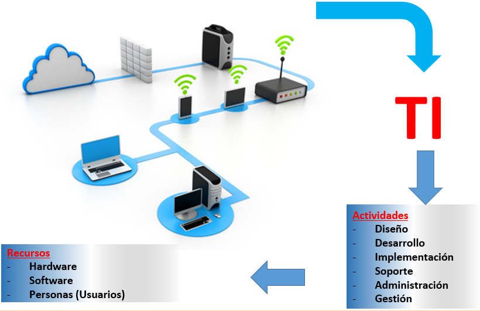
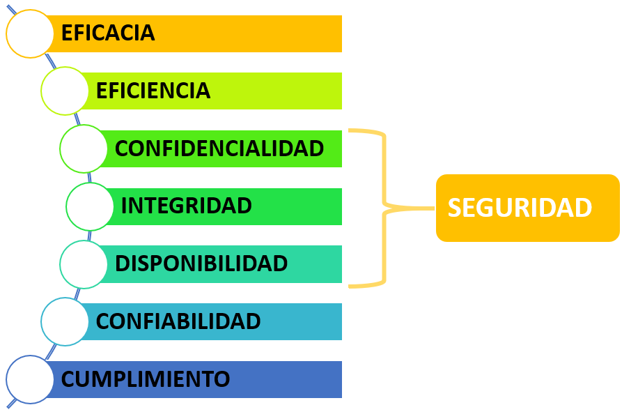

¿Qué son las TI?
La Tecnología de la Información es la aplicación de ordenadores y equipos de telecomunicación para almacenar, recuperar, transmitir y manipular datos, con frecuencia utilizado en el contexto de los negocios u otras empresas.
La Tecnología de la Información es la aplicación de ordenadores y equipos de telecomunicación para almacenar, recuperar, transmitir y manipular datos, con frecuencia utilizado en el contexto de los negocios u otras empresas.

Las organizaciones para mantenerse actualizadas y ser competitivas necesitan utilizar recursos de TI, los cuales están expuestos a una serie de riesgos y amenazas.
Entre los recursos más relevantes de TI están:
Los recursos de TI son manejados por procesos de TI, para lograr objetivos de TI, que respondan a los requerimientos del negocio.


Confidencialidad: Se refiere a la protección de la información crítica contra su divulgación no autorizada.
Integridad: Se vincula con la exactitud y la totalidad de la información así como también con su validez.
Disponibilidad: Se relaciona con el hecho de que la información se encuentre disponible cuando el proceso lo requiera.
Eficiencia: Realizar una tarea utilizando el menor recurso posible o en el menor tiempo posible.
Eficacia: Alcancar las metas establecidas según los objetivos propuestos.
Confiabilidad: Se refiere a que tanto podemos creer en la información que nos brinda una fuente de información.
Obra publicada con Licencia Creative Commons Reconocimiento Compartir igual 4.0